Cubes (Hexahedrons Sounds Smarter!)
Cubes (Hexahedrons Sounds Smarter!)
Let’s Make Cubes
After building our dimensions, we shall be working on our cube types and how best they can serve each business area.
Here is this chapter’s learning journey:
Figure 4.1
Using the jigsaw analogy, we now know that dimensions are the tiles created for us, which are then pieced together to form a cube. A cube, therefore, is a multi-dimensional (two or more dimensions) structure that controls how data is stored and then used for calculations, translations, and consolidations.
Back in the design phase of the implementation project, there would have been a discussion about cubes, from their initial requirements for Top Training to using them for reporting purposes.
To distinguish types of cubes within OneStream, the scoping session in the project uses an implementation methodology to describe cube design options. This is not related to selecting anything in the platform; it is a way of labelling the functional workings of the cube. Explored in detail – in both the Foundation and Administrator Handbooks – a summary of our options is:
Cubes (Hexahedrons Sounds Smarter!) › Let’s Make Cubes
Super Cube Linked to Detail Cubes
A super cube is a common setup for workflow and consolidation where a top-level cube is linked to the detail business area cubes. With Top Training, Figure 4.2 shows that the super 100 Corporate cube links the three business area detail cubes of Americas, Europe and Asia Pacific. An alternative approach can also be a single detailed cube, which contains all three business areas, linked to the super cube.
Cubes (Hexahedrons Sounds Smarter!) › Let’s Make Cubes
Exclusive Cube
As the name suggests, an exclusive cube will be a standalone cube that could be populated by another cube through business rules and possibly used for the purpose of complex reporting. This type of setup could be considered if data is of a sensitive nature and security can easily be applied to the isolated build.
Cubes (Hexahedrons Sounds Smarter!) › Let’s Make Cubes
Monolithic and Specialty Cubes
Monolithic cubes are considered simple in design and not linked to other cubes. They can be part of a phased approach, from capturing Top Training’s requirements to eventually being updated with further design features. Ultimately, a monolithic and exclusive cube could serve the same purpose with no differences.
Off the back of the monolithic option, an administrator can create a specialty cube which, in effect, is a simpler version of the monolithic cube but used for a specific purpose (for example, a driver-based function or for inventory). It can be separated from other cubes and secured to grant access and maintenance.
These are the cubes that have been designed in Top Training Inc.
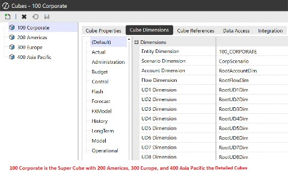
Figure 4.2
Cubes (Hexahedrons Sounds Smarter!)
Building a Cube
The cube’s design and build will be the responsibility of the implementor or the administrator for Top Training. At the start of the project, all the required cubes will be built, but once the platform is up and running and maintained by the administrator, then a decision needs to be made for any further business requirements. Business requirements may mean adding new cubes, or (after speaking with the stakeholders) the administrator may conclude that the new requirement can be captured in an existing cube. Let’s start off by building a new cube before we tackle the second option.
Cubes are built in the Application tab, and once the cube menu is selected, there are five tabs that will be worked through to complete the construction of said cube. These are Cube Properties, Cube Dimensions, Cube References, Data Access, and Integration.
Cubes (Hexahedrons Sounds Smarter!) › Building a Cube
Don’t Forget Your Cube Properties Tab
The Cube Properties tab has six sections: General, Security, Workflow, Calculation, Business Rules, and FX Rates. It is important to get the core settings correct first time, as some cannot be changed once the cube is live. For example, unlike other artifacts, the name of the cube cannot be amended.
In the General section, we assign a Time dimension profile (the standard Time Profile will be assigned by default), as well as the name and description of the cube and the selection of the cube type. The cube type selection ranges from Standard, to Tax, Treasury and What If, as well as cube types 1 to 8. Consider using a tag to group cubes with similar characteristics. Tags are also a great way when applying constraints on dimension members (as mentioned in the previous chapter) to vary constraints by cube type.
The Security section controls read and write access, as well as maintaining the cube object, but – regardless of the access setting – the user will be able to select the cube in the Cube POV.
The additional setting – Parent Security for Relationship Consolidation – can restrict access to parent-level consolidation members, such as share, elimination, OwnerPostAdj, and Top, by selecting True.
As per Figure 4.3, the next section is about workflow, which we will get into – in depth – later in the book. The Workflow section in the cube is a starting point for selecting which cube will be the top-level cube used by the Workflow Profiles to assign tasks and entities to.
The Suffix for varying Workflow by Scenario Type option will only be available if the top-level cube is set to True and provides a mechanism to create further instances of top-level cubes in the Workflow Profile type (see chapter on ‘Let Your Workflow’).

Figure 4.3
The Calculation section determines the options used for the consolidation and translation algorithm engine (the Standard option is the default, working with Consolidation dimension members as per the previous chapter, and the FX rates setting shown in Figure 4.4, below; this can be switched to Custom consolidation to use a business rule instead). Other options include performing a calculation when there’s no data in the cell. This ensures data being copied into empty time periods or scenarios through a calculation will run.
The Business Rules section determines the order in which rules are run. This is referred to as the Data Unit Calculation Sequence (DUCS), explored further in a later chapter on ‘Figuring Out Calculations’. For reference, the Finance Rules and Calculation Handbook book covers calculations and business rules in depth.
The FX Rates section allows for the selection of the default reporting currency that entities will translate to, with the rate and rule types for income and balance sheet accounts. The default currency is also the driver for the system to triangulate rates.
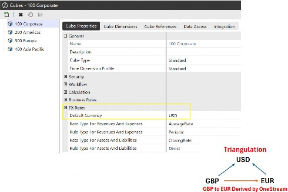
Figure 4.4
As part of my learning journey, I now understand the Periodic and Direct Rule Types, and I love sharing, so here is what I have learned.
The direct method is straightforward. Whatever the YTD local value is for the entity for a particular month, just multiply it by the exchange rate. So, the direct rule is like a spot rate.
The periodic method, on the other hand, first takes the month’s movement and multiplies that local value with the exchange rate, and then adds last month’s translated YTD value.
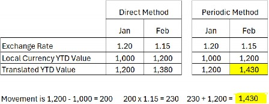
Figure 4.5
Figure 4.5 shows the direct method translates the local value by the exchange rate, whereas – for the periodic method – the movement from January to February is 200, which is multiplied by the 1.15 rate with the result added to 1,200 (January’s translated value) for the final value to be 1,430.
This is all extensively covered further in the OneStream Administrator Handbook.
Cubes (Hexahedrons Sounds Smarter!) › Building a Cube
Pick Your Dimensions Carefully in the Cube Dimensions Tab
After we have established in the design phase which dimensions should be assigned to the cube per Scenario Type, it is here – in the Cube Dimensions tab – where the dimensions are now selected. This will provide structure to the cube and how the cube will organize the data within the application.
For each Scenario Type required, we assign as many of the Account to UD8 dimensions as per the design phase. Further, if any dimension is not needed, it is recommended that the root option be selected. For the Default Scenario Type, we select which Entity and Scenario dimensions are required for this cube, as shown in Figure 4.6; then all the other Scenario Types for this cube will also use them (note that we could continue in the Default Scenario Type with the selection of other dimensions or leave it to just Entity and Scenario with the others set to Root).
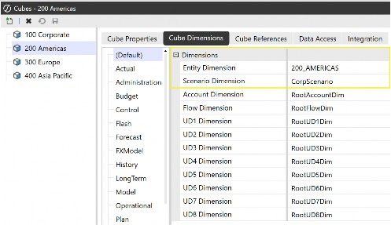
Figure 4.6
Selecting the root option on the dimensions which are not needed is important. Why? Because once dimensions have been assigned and data is loaded into the cube, it is not possible to change any dimensions assigned to that cube (unless a complete data clear-out is done on the cube).
But if root has been the original selection, then as the value is sitting in the root’s None member and should a new dimension be required, this can be easily changed to the new dimension name.
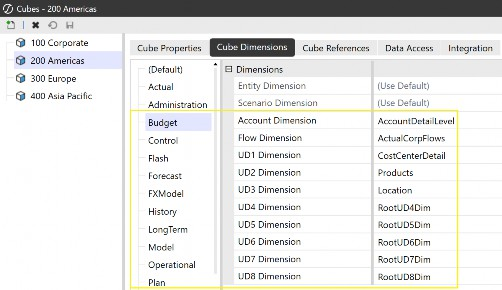
Figure 4.7
Cubes (Hexahedrons Sounds Smarter!) › Building a Cube
Cubes References Tab
When confirming what our cube design options were, specifically the super cube linked to detailed cubes, this tab completes that design. The options available in this tab have come about from a chain of events starting firstly with the creation of the entity hierarchy where in Top Training, the Corporate entity has a relationship with Americas, Europe and Asia Pacific entities. Then, the 100 Corporate cube has True for Is Top Level Cube For Workflow, in the Workflow section of the Cube Properties tab (the first tab).
In our example, it will only be the 100 Corporate cube that has options in the Cube References tab and not 200 Americas, 300 Europe, or 400 Asia Pacific, as these are the detail cubes.
To complete the selection for the 100 Corporate cube in Cube References, it is just a case of selecting which cube from the right-hand dropdown is assigned to the left-hand Entity dimension. For convenience, we labeled the cube name the same as the entity name, but this may not always be the case.
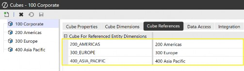
Figure 4.8
Cubes (Hexahedrons Sounds Smarter!) › Building a Cube
Data Access Tab
The first layer of cube security was in the Cube Properties tab, with the next layer in the Data Access tab, providing access to the data stored in a cube. The Data Cell Access Security, also known as slice security (access to specific slices of data), provides the mechanism for the user not to have access to every data cell for, say, a particular entity or account-related dimension. The combination of security settings involved here is beyond the scope of this book but can be found in the very helpful OneStream Documentation Release and the OneStream Security Essentials book.
Cubes (Hexahedrons Sounds Smarter!) › Building a Cube
Integration Tab
Configuration settings in the Integration tab will impact the data source and transformation rules menu options (discussed in detail later in the book), which are both in the Application tab, and ultimately control what is seen for the data load in the OnePlace workflow.
It is in the Cube Dimensions tab where the selection of the dimensions for each dimension type will, in turn, provide the driver in this Integration tab to disable dimension types not being used. For example, in the Cube Dimension tab, the 200 Americas cube for the Budget Scenario Type, has UD4 to UD8 set to Root as they are not being used. This means they do not need to be part of a selection in the data source and transformation rule profile menus. For this to happen, all five User Defined dimension types can be set to False in the Enabled setting in the Integration tab as per Figure 4.9.
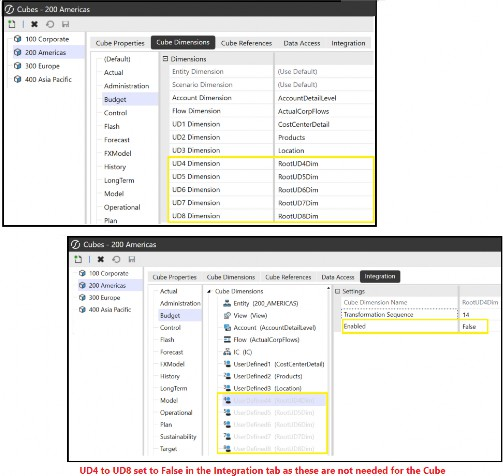
Figure 4.9
Once set, these dimensions are still part of any data load, with the None member automatically being used. This would also mean the None member should now be selected for these dimensions when running reports.
With the super cube plus a range of detail cubes now built, the data from various sources to load into OneStream will follow and be discussed in the next few chapters. For the remainder of this chapter, a few technical aspects of cubes – together with content on design efficiency – will enhance our learning experience of cubes and make for a good segue to the Administrator Handbook publication.
Cubes (Hexahedrons Sounds Smarter!)
Did Someone Mention Data Units?
Important knowledge, when it comes to the design of a OneStream application and measuring the efficiency of cubes processing various tasks, can be encapsulated with the term Data Unit.
Within OneStream’s multi-dimensional engine, the work tasks carried out range from clearing data, loading data, calculating data, translating data, copying data and consolidating… you guessed it… data!
All of these tasks are performed within a Data Unit. This Data Unit is created in the server’s memory and the size of that unit will determine the processing time.
If we were to look at the cube as a whole, with so many data intersections and records, it would be difficult to gauge the processing time for various tasks the cube performs. Therefore, taking smaller chunks (or subsets) of the cube would be easier, hence the Data Unit metric. The analogy I have in mind for this is that of a large house. It may be difficult to gauge how many days would be needed to refurbish the whole house, but if we split it down room by room, this would be easier to assess.
So, what is the make-up of a Data Unit? It is the Entity, Parent, Consolidation, Scenario and Time dimensions, as well as the cube, that make up a Data Unit (this is commonly known as a Level 1 Data Unit… bear with me!).
Why is this important for the user? Knowing how the size of the data impacts performance for, say, good report building would be one example. When a report is built and run, the server is assessing how many members from Entity, Parent, Consolidation, Scenario and Time need to render (basically the number of intersections or slices of data to render) to produce the report (i.e., one entity or two entities, one year or two years). The multiplying of members from these specific dimensions adds to the number of Data Units that are being processed at one time, and in this case one Data Unit or two Data Units.
This is why a consolidation report containing multiple entities on the rows may perform more slowly than an income statement with a single entity in the Cube View POV, because entity belongs to a Level 1 Data Unit.
The Data Unit we are describing is known as Level 1, and its size is of a higher granular level than Level 2 or Level 3 Data Units, both of which slice the monitoring of the performance at a more detailed level. Level 2 considers all of the Level 1 dimensions mentioned, plus the Account dimension. Level 3 is all of Level 1 and 2 and then a selected User Defined dimension. These two levels are discussed further in the Administrator Handbook.
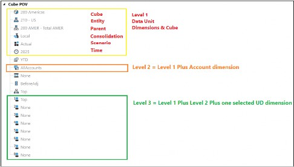
Figure 4.10
Cubes (Hexahedrons Sounds Smarter!) › Did Someone Mention Data Units?
Let’s Fall in Love with Extensibility
Top Training’s platform administrator is responsible for correctly maintaining the application to provide flexibility and high-level performance. One of the key design features for this is Extensibility.
Extensibility is the sharing, inheriting, and extending of dimensions by entity across business areas or across Scenario Types. This type of design helps to contain different requirements for Top Training’s business areas all in one application.
Extensibility provides the flexibility of a single member serving multiple purposes, as well as the ability to use multiple cubes, with each one tailored to a different business and each one possibly using different levels of the same dimension. Ultimately, performance gains can be seen when breaking up the Data Units; in Figure 4.11, the
100 Corporate uses the summary level for the Account and UD1 dimensions, whereas the 200 Americas cube is at the detail level of the same dimensions.
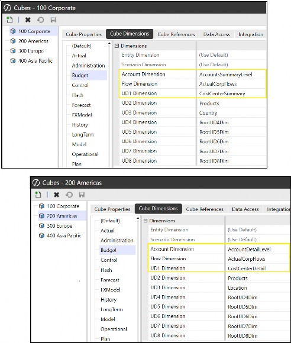
Figure 4.11
Two types of extensibility designs are discussed in the implementation project – vertical extensibility (which can reduce the Data Unit size) and horizontal extensibility (which does not reduce the Data Unit size).
Cubes (Hexahedrons Sounds Smarter!) › Did Someone Mention Data Units? › Let’s Fall in Love with Extensibility
Vertical Extensibility
The purpose of vertical extensibility is to consolidate an entity structure. This is set up with a single Scenario Type across entities and multiple cubes. As the entity is the only dimension that cannot extend (you cannot have Entity dimensions inheriting other Entity dimensions), we are instead able to create relationships between members from different Entity dimensions and then connect them using multiple cubes. Figure 4.12 sketches out Top Training’s 100 Corporate Cube consolidating the detail business area of cubes 200 Americas, 300 Europe, and
400 Asia Pacific.
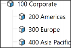
Figure 4.12
As other dimensions are able to extend, there is then the ability to have different Account, Flow or User defined dimension members for different areas of the business, so those areas can report on what is relevant to their results. Looking at Figure 4.13, for operating sales, BU1 has related detail members that are different from the BU2 detail member requirements.
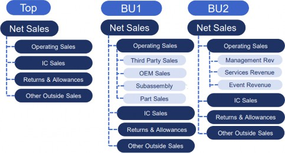
Figure 4.13
This type of design suits an organization that is a conglomerate (a group containing some businesses that are not related in terms of industry or markets).
Cubes (Hexahedrons Sounds Smarter!) › Did Someone Mention Data Units? › Let’s Fall in Love with Extensibility
Horizontal Extensibility
Possibly, with just one cube, horizontal extensibility will take that cube and use the concept of dimension levels over a range of selected Scenario Types. For example, in Figure 4.14, a cube’s Budget Scenario Type has been built with the Account dimension showing net sales at a summary level, and for the same cube, its Actual and Forecast Scenario Types use the Account dimension at a detail level, and in this case, different base-level members for operating sales. There is still the ability to use variance analysis between scenarios, as there will still be some common members.
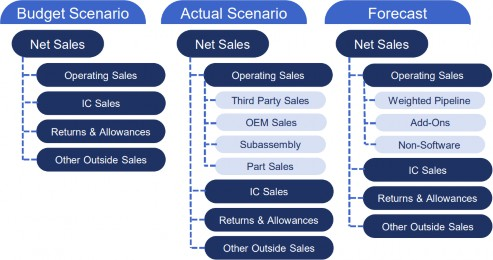
Figure 4.14
Cubes (Hexahedrons Sounds Smarter!) › Did Someone Mention Data Units? › Let’s Fall in Love with Extensibility
Existing OR New Cube? That is the Question!
In Top Training, the administrator will face changing business requirements that require new members in existing or new dimensions altogether. The obvious question is whether the business change can be worked into an existing cube or whether a new cube will need to be created.
It will be the role of the administrator to determine the answer to this question, considering things such as:
Is the new business requirement involving an acquisition that is in the same industry, or a completely different industry?
The same industry only requires additional members to a dimension and, therefore, lies within an existing cube. But with a new industry, new dimensionality will be required and (as mentioned above) existing cube dimensions cannot be changed once data is in the cube. Therefore, a new cube is required.
Is the new business requirement referring to new products that are similar to existing ones, or referring to a complete diversification of the product range?
Similar products can be added to an existing Product User Defined dimension, but diversification will be a new User Defined dimension that will ultimately require reporting from a new cube setup.
Other factors will come into the decision, with each OneStream client having specifics that may warrant a new cube; for example, a reorganization of entities or reducing the Data Unit size.
Cubes (Hexahedrons Sounds Smarter!)
Conclusion
A cube will hold most of the data required for reporting. There are various types of cubes, from detail business area cubes rolling up to a super cube or exclusive cube for complex reporting, and monolithic cubes, which could also act as placeholders during the project’s implementation. Specialty cubes can be used for specific purposes, such as storing driver-based data for other cubes, or an inventory cube can be used where calculations can be isolated to this particular cube, not affecting the rest of the application.
Building the cube will initially require good dimension design, as will selecting which dimensions are required and if the members for the cube need to be at a summary or detail level. Each cube built can have a default currency as part of the entity translation. The default currency is also used as part of the currency triangulation calculation.
Data Units are made up of selected Level 1 dimensions that are considered subsets of the cube and used as a metric to measure performance.
Cubes are built using extensibility, either vertical where each business area cube rolls up to a super cube for consolidation or planning purposes; or horizontal extensibility, which can be one cube over many Scenario Types.
This chapter on understanding cubes in OneStream is the foundation for upcoming chapters on importing, workflow, and reporting, which will then lead us to the bigger picture about cubes… so keep going; you’re doing great!